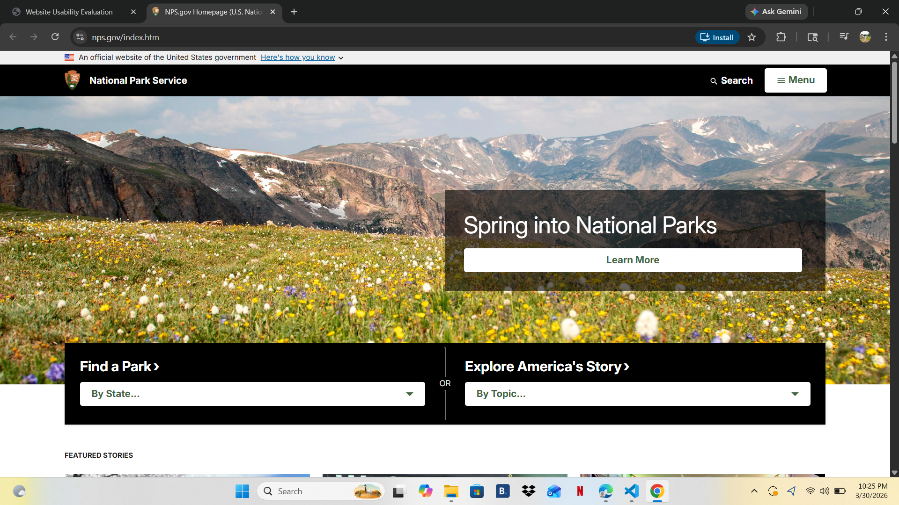

Website Name & URL
Name: National Park Service
URL: https://www.nps.gov
Screenshot

Target Audience
The target audience includes tourists, students, families, and anyone interested in visiting or learning about national parks.
Site Organization
The site is organized with a top navigation menu that includes sections like Parks, Plan Your Visit, and Learn About Parks. Content is grouped into categories, making it easy to browse.
CRAP Design Principles
Contrast: Dark text on light background makes content readable.
Repetition: Consistent colors and fonts throughout the site.
Alignment: Content is neatly aligned in sections.
Proximity: Related information is grouped together.
Accessibility Audit Score
The site scored approximately 90+ on accessibility tools like Lighthouse. It includes alt text and readable structure.
Effectiveness
The site is effective because users can easily find park information and plan visits without confusion.
Efficiency
Users can complete tasks quickly due to clear navigation and organized content.
Engagement
The website is visually appealing with images of parks and has a clean design, making it enjoyable to use.
Recommendation
One improvement would be reducing the amount of text on some pages to make information easier to scan quickly.